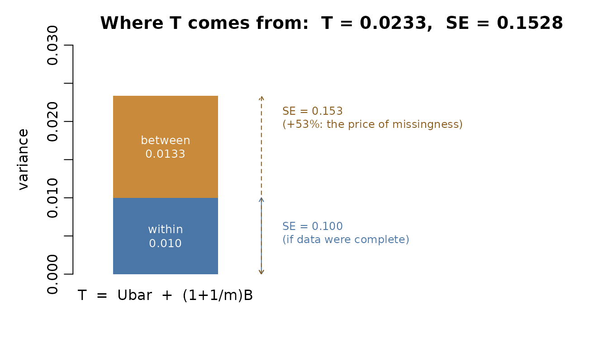
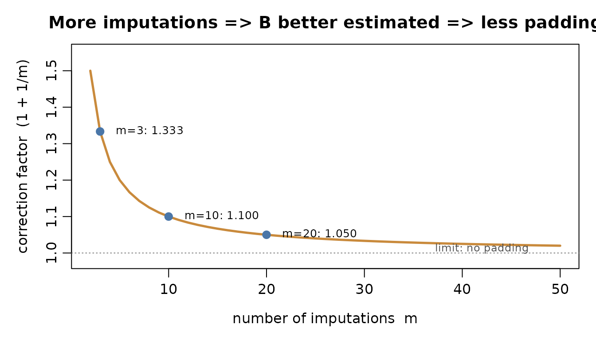
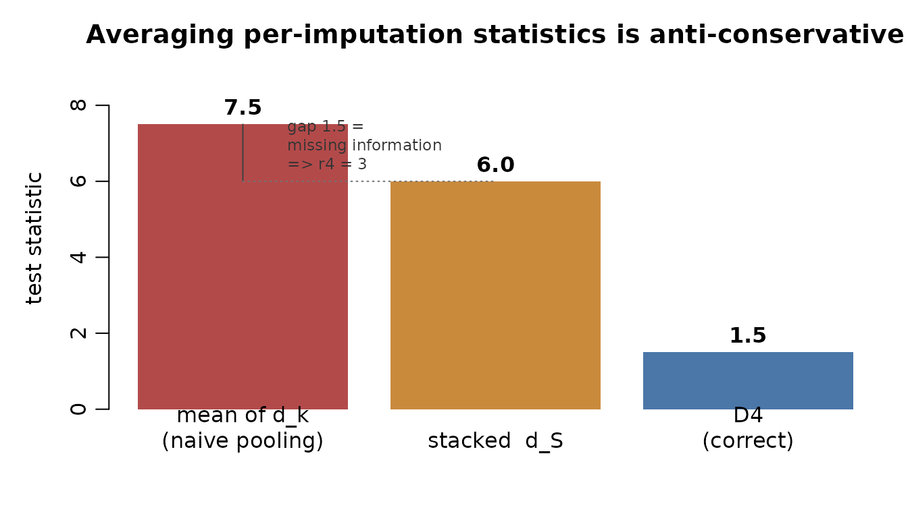
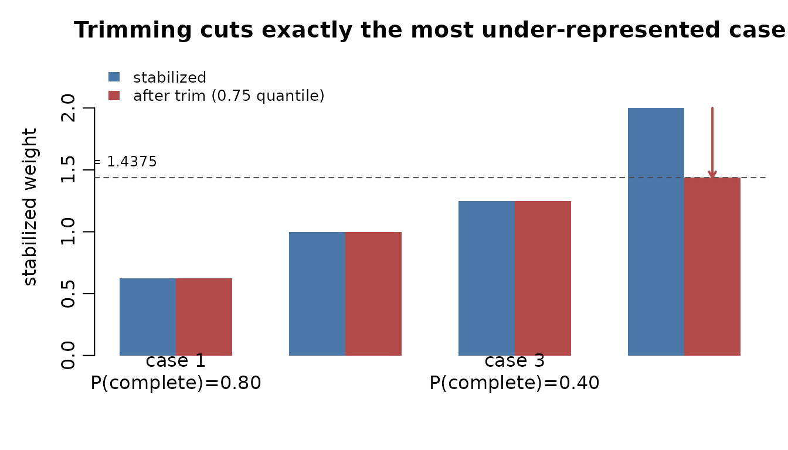
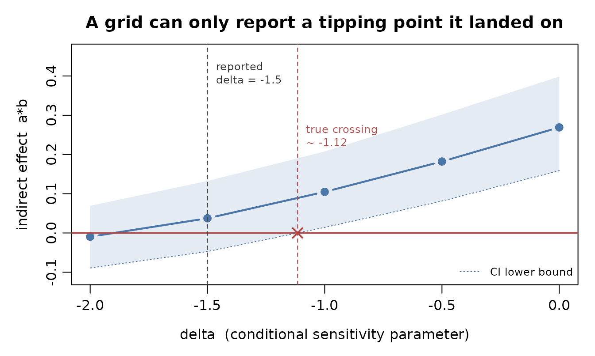

Technical reference: design, contracts, and methodology
Source:vignettes/technical.Rmd
technical.RmdThis vignette is the single technical reference for
missingmed: the architecture, the cross-package
contracts it depends on, the statistical methodology of every estimator
and inference path, and the engineering decisions (and their rationale)
made along the way. Code blocks are illustrative
(eval = FALSE); runnable walkthroughs live in
vignette("missingmed") and
vignette("mbco-mi").
1. Architecture (S7, four verbs, three classes)
missingmed is a thin orchestration layer: it runs
mediation across the “missing-data middle” and delegates the statistics
outward — fitting to medfit,
inference to RMediation, and
(later) simulation to medsim. It is written in S7 to
match the newer ecosystem packages and the shared
medfit::MediationData contract.
The pipeline is four verbs over three classes:
set_md_mediation() -> run() -> pool() -> infer()
MDMediationData MDMediationFit MDMediationResult CI / MBCO
(data + spec) (per-imputation (pooled named (RMediation
named Med.Data) Med.Data) or hosted D4)The same pipeline as a diagram:
Note the asymmetry the linear sketch above cannot show:
infer(type = "mc") consumes the pooled
result, while infer(type = "mbco") reaches back to the
per-imputation fit. That is section 4.1’s
non-commutativity, drawn.
A A[“set_md_mediation()
MDMediationData”] –>|“method = mi”|
R1[“run()
fit each imputation”] A –>|“method = ipw”|
R2[“run()
reweight complete cases”] R1 –>
F[“MDMediationFit
list of m named MediationData”] R2 –> F F
–>|“pool()”| P[“MDMediationResult
pooled named MediationData”] P
–>|“infer(type = mc)”| C1[“RMediation::ci_mediation_data()”] F
–>|“infer(type = mbco)”| C2[“hosted D4 stacking
R/mbco_mi.R”]
–>
| S7 class | Carries | S4 ancestor |
|---|---|---|
MDMediationData |
data (mids or data.frame) + mediation spec
+ estimator/mechanism axes |
SemImputedData |
MDMediationFit |
list of per-imputation named
medfit::MediationData (+ IPW weights) |
SemResults |
MDMediationResult |
pooled named medfit::MediationData +
within/between/total vcov |
PooledSEMResults |
Orthogonal axes. The estimator
(method = "mi" | "ipw") and the model (formulas +
engine) are independent. The same
run() -> pool() -> infer() chain serves both
estimators; only run() branches internally.
md <- set_md_mediation(data, formula_y = Y ~ X + M + C, formula_m = M ~ X + C,
treatment = "X", mediator = "M", method = "mi") # or method = "ipw"
res <- pool(run(md))
infer(res, type = "mc")2. Ecosystem contracts
missingmed produces and consumes objects defined elsewhere. These contracts are load-bearing — getting the names right is what makes inference work.
2.1 medfit::MediationData (the fitting contract)
fit_mediation() / extract_mediation()
return a MediationData whose @estimates is a
named numeric vector and @vcov a
named matrix:
estimates: m_(Intercept), m_X, m_C, y_(Intercept), y_X, y_M, y_C, a, b, c_primeThe convenience aliases a (= m_X),
b (= y_M), c_prime (=
y_X) and the matching @vcov dimnames are the
interface every downstream consumer resolves by
name.
2.2 RMediation (the inference contract)
Namespace note: the package is
RMediation(capital R-M), notrmediation— the source repo isdata-wise/rmediationbutDESCRIPTION: Package: RMediation. Code usesRMediation::.
-
ci_mediation_data(mu, level, type, n.mc)— Monte-Carlo / distribution-of-the- product CI from a single namedMediationData. Resolvesa/bstrictly by name (errors if unnamed). This is thetype = "mc"path. -
mbco(h0, h1, ...)— likelihood-ratio MBCO, currently OpenMx-only; it has no per-imputation / MI entry point (see §4).
2.3 Dependency direction (no cycle)
missingmed -> medfit (fit_mediation, MediationData)
missingmed -> RMediation (ci_mediation_data, medci)
RMediation -> medfit (consumes MediationData)
medsim (Suggests, later phases)missingmed imports both medfit and RMediation; neither depends back on missingmed, so the graph is acyclic.
3. The MI estimator and Rubin’s rules
Under multiple imputation, run() fits
every imputed dataset with
medfit::fit_mediation(), yielding a list of m
named MediationData. pool() applies Rubin’s
(1987) rules on the named vectors so the path labels
survive pooling:
Worked example: pooling three imputations
Time: about 3 minutes. Arithmetic only – no calculus, no software.
After this you can compute by hand and say what fraction of your information the missing data cost you.
The punchline first. Three imputations whose
estimates differ by only
turn a standard error of 0.100 into 0.153. That 53%
inflation is the price of the missing data, and computing it is
all pool() does.
Symbols in this example:
| symbol | plain words | here |
|---|---|---|
| the estimate from imputation | ||
| how uncertain that single fit was | , i.e. | |
| how much the imputations disagreed | computed in step 3 | |
| total variance, both sources | computed in step 4 |
The three fits:
| 1 | 0.50 | 0.01 | -0.10 |
| 2 | 0.60 | 0.01 | 0.00 |
| 3 | 0.70 | 0.01 | +0.10 |
Step 1 – average the estimates.
Step 2 – average the within-imputation variances.
Step 3 – measure the disagreement between imputations.
Step 4 – combine the two sources. , so .
Two more numbers fall straight out:
- Fraction of missing information . Over half the information about is missing.
- Degrees of freedom . Three imputations buy about six df, not three.

Explain this one to yourself before moving on. Step 4 multiplies by instead of using alone. Why should a larger make that correction smaller?
Answer
is itself estimated, from only numbers, so it carries sampling error of its own. The factor inflates it to account for that. With the factor is ; with it is . The more imputations you draw, the better you know the between-imputation variance, and the less you must pad it.

Your turn – same four steps, one line blanked. Now , still with and . ; $B = \underline{\hphantom{0.01}}$; $T = \underline{\hphantom{0.0233}}$.
Filled in
The spacing is identical to the worked case, so the deviations are again : and , . Only moved. depends on the spread of the imputations, never on their level.
Why this cannot be done on directly. Every step above is linear in . The indirect effect is not, so
pool()deliberately stops here: it pools and their covariance and hands the nonlinear step toRMediation. Pooling across imputations and attaching a normal interval commits two errors at once.
You can now read res@tidy_table’s
var_w, var_b and var_tot columns
as steps 2, 3 and 4 of the arithmetic above.
The pooled MediationData is built by
copy-modifying a per-imputation one (S7 is
copy-on-write), replacing only
@estimates =
and
@vcov =
— so all medfit metadata (roles, predictors, families) is inherited and
the aliases stay name-addressable for
ci_mediation_data().
fit <- run(md_mi) # m named MediationData
res <- pool(fit) # pooled named MediationData + within/between/total vcov
res@tidy_table # term, estimate, std_error, var_w, var_b, var_tot4. MBCO under MI: D4-stacking (and why it is hosted here)
4.1 Why MBCO does not commute with Rubin’s rules
MBCO tests . Since , the constrained log-likelihood is the branch union:
That max() is non-linear, so the MBCO statistic of the
pooled estimate is not the pool of
per-imputation MBCO statistics. You cannot pool first and test second —
you need the per-imputation fits.
4.2 D4 combination
Hence MDMediationFit retains the per-imputation list
(exposed by per_imputation_list()), and
infer(type = "mbco") combines the per-imputation LRT
statistics with the D4 rule (Chan & Meng 2022;
Grund et al. 2021):
Worked example: pooling three MBCO statistics
Time: about 2 minutes.
After this you can explain why averaging per-imputation test statistics is anti-conservative, using a number.
The punchline first. The three statistics average to 7.5, which looks significant. The correct pooled answer is 1.5, which is not. The gap between those two numbers is the missing information.
Take imputations, one constraint ():
Step 1 – measure the gap between the average and the stacked statistic.
Step 2 – scale it into .
Step 3 – deflate.
Step 4 – find the reference distribution. Here , which is not , so the small-sample branch applies: , giving .

Explain this one to yourself. Why is larger than when both describe the same hypothesis?
Answer
Each per-imputation statistic is computed as though its filled-in dataset were real, complete data – so each one ignores the uncertainty that produced the filling-in, and is optimistic. Stacking averages the log-likelihoods first, which partly cancels that optimism. The systematic excess of over is therefore an estimate of how much of the evidence was manufactured by the imputation model rather than observed. converts that excess into a deflation factor.
Watch the truncation. If hits the floor, the correction vanishes and . Check
r4in the returned object before trusting a borderline .
You can now say why MDMediationFit must
retain the per-imputation list:
cannot be recovered from the pooled result alone.
4.3 Hosting decision
RMediation::mbco() is OpenMx-only with no MI entry
point, so the D4 machinery is hosted in missingmed
(R/mbco_mi.R), ported from the Missing-Effect research
prototype. It reproduces the prototype exactly (max abs
diff
across design cells). When RMediation gains an MI entry
point, this code should move upstream (TODO noted in
source).
5. The IPW estimator
IPW is a robustness complement to MI (manuscript appendix): instead
of imputing, it reweights the observed complete cases
to represent the full sample under MAR. The whole estimator is a single
internal branch, .ipw_run(); pool() and
infer(type = "mc") are unchanged.
5.1 Pipeline
md <- set_md_mediation(df, Y ~ X + M + C, M ~ X + C, treatment = "X",
mediator = "M", method = "ipw",
weight_formula = NULL, weight_stabilize = TRUE, weight_trim = 0.99,
se_type = "sandwich")
res <- pool(run(md)) # MDMediationFit(m = 1) -> MDMediationResult (B = 0)
infer(res, type = "mc")Because there is a single weighted fit,
MDMediationFit@m = 1 and pool() reduces to
— the result is structurally identical to an MI result, so nothing
downstream changes.
5.2 Weight estimation
Let mark a complete case over the model variables.
-
Joint complete-case model (default).
weight_formula = NULLfits on the fully observed model variables (the MAR drivers); a singleformulaoverrides the predictors. - Per-variable / sequential factorization. A named list of formulas fits one model per incomplete variable and multiplies: , following the causal order .
Stabilized weights
(weight_stabilize = TRUE, default) use a treatment-only
numerator to reduce variance:
Worked example: four weights, stabilized and trimmed
Time: about 2 minutes.
After this you can predict what stabilization does to a point estimate (nothing) and what trimming does to it (moves it).
The punchline first. Stabilization rescales every weight by the same factor, so it cannot move the point estimate. Trimming does move it – and it moves it by cutting exactly the case that needed the most correction.
Four complete cases, denominator model , constant numerator :
| unstabilized | stabilized | ||
|---|---|---|---|
| 1 | 0.80 | 1.250 | 0.625 |
| 2 | 0.50 | 2.000 | 1.000 |
| 3 | 0.40 | 2.500 | 1.250 |
| 4 | 0.25 | 4.000 | 2.000 |
| mean | 2.4375 | 1.21875 |
Read one: case 1 had an 80% chance of being complete, so it stands in for people. Case 4 had only a 25% chance, so it stands in for – it is carrying three absent people on its back.
Two things to notice.
- Every stabilized weight is exactly its unstabilized counterpart. A weighted regression is invariant to a common rescaling of the weights, so the point estimate is identical either way; stabilization buys variance, never consistency.
-
weight_trim = 0.75caps at the 0.75 quantile of the stabilized weights, , pulling case 4 from 2.000 down to 1.4375.

Explain this one to yourself. Point 1 says a common rescaling is harmless. Why, then, is trimming not harmless?
Answer
Rescaling multiplies every weight by the same constant, so the relative contributions – which is all a weighted fit sees – are unchanged. Trimming changes only the largest weights, so it changes the relative contributions. And it always cuts the cases with the smallest : exactly the under-represented ones the weighting existed to recover. Trimming changes the estimand; it does not merely stabilize the estimate.
You can now explain the bias-variance trade in
weight_trim without reaching for a simulation.
Trimming (weight_trim) caps weights at
an upper quantile of the untrimmed complete-case weights; 1
disables it.
5.3 Variance: sandwich vs model
IPW’s weighted-GLM model-based vcov is optimistic (it ignores that
weights were estimated). se_type = "sandwich" (the IPW
default) uses heteroskedasticity-consistent
sandwich::vcovHC instead. This is implemented in
medfit via an injectable vcov_fun threaded through
extract_mediation() (so the named-vcov assembly stays in
one place); missingmed just passes se_type through.
MBCO for IPW is not implemented (a weighted LRT is methodologically distinct);
infer(type = "mbco")on an IPW fit errors with guidance.
5A. Non-gaussian models (family_y,
family_m) and the scale of a*b
set_md_mediation() takes engine,
family_y and family_m and forwards them to
medfit::fit_mediation(), whose default engine already
is "glm". Both estimators and both
inference types therefore accept non-gaussian families with no extra
machinery: a binary mediator (family_m = binomial()), a
binary outcome (family_y = binomial()) and a count outcome
(family_y = poisson()) all run through
set_md_mediation() -> run() -> pool() -> infer().
5A.1 The scale caveat
For a non-identity link, a and b are
link-scale coefficients, so their product – and the
Monte-Carlo interval around it – is on the link scale too:
| Model | a |
b |
a*b is… |
|---|---|---|---|
| gaussian / gaussian | mean difference | mean difference | a mean difference |
| binomial mediator | log-odds | mean difference | change in Y per log-odds of M |
| binomial outcome | mean difference | log-odds | log-odds units |
| poisson outcome | mean difference | log-rate | log-rate units |
Two consequences worth stating plainly:
-
a*bunder a non-identity link is not a risk difference, a risk ratio or an odds ratio, andexp(a*b)does not produce one. Reporting it as such is a category error, not a rounding issue. - Rubin’s rules are applied to the coefficients,
which is standard. Pooling a transformed quantity (an odds ratio, say)
is a different and much less well-behaved operation;
pool()deliberately does not do it.
Where a response-scale contrast is wanted – a natural direct/indirect effect on the risk difference or risk-ratio scale – the mediation formula must be applied to the fitted models, which is outside missingmed’s orchestration remit. That is a fitting-layer concern (medfit), not a pooling one.
5A.2 IPW plus a binomial family: the non-integer-successes warning
stats::glm() emits
non-integer #successes in a binomial glm! whenever a
binomial fit receives non-integer prior weights. IPW weights are inverse
sampling probabilities, not trial counts, so the warning fires on every
method = "ipw" fit with a binomial family. It is a false
alarm: the weighted score equations being solved are exactly the ones
IPW specifies, and the point estimates and sandwich SEs are unaffected.
It is left unsuppressed rather than silenced, so that a genuine
non-integer-response mistake still surfaces.
5B. MNAR sensitivity (sensitivity_mnar())
The pipeline estimates under MAR — mice
imputes under MAR by construction. MAR versus MNAR is not testable from
the observed data, so there is nothing to estimate without an assumption
imported from outside it. sensitivity_mnar() therefore
produces a curve, not an estimate:
if the unobserved values of the target sit
deltaunits away from what MAR imputation implies, the indirect effect is X.
No rung is “the MNAR estimate”. Each is conditional on its own delta.
5B.1 Method
Delta-adjusted imputation in the pattern-mixture sense (van Buuren, FIMD §9.2; Leacy et al. 2017). Per rung: re-impute with the shift applied, then run the existing pipeline unchanged.
For a continuous target the canonical procedure
imputes under MAR and then adds the constant to the imputed values
(Hayati Rezvan et al. 2018) — which is what mice’s
post argument does, and what this implements. For a
categorical target the shift instead belongs on the
imputation model’s linear predictor, with delta on the odds-ratio scale;
that is not implemented, and such targets error rather than receiving a
meaningless additive shift.
Re-imputation rebuilds from the mids object’s
stored settings, never from its recorded
call — a mids built inside a function stores a
call referencing that function’s local variables, which does not resolve
anywhere else.
sens <- sensitivity_mnar(md, delta = c(0, -0.5, -1, -1.5, -2))
tidy(sens)
summary(sens) # adds the tipping point, if the grid contains one5B.2 What delta actually is — read before choosing a
value
delta is a conditional sensitivity
parameter (CSP): a difference conditional on all remaining variables
and their missingness indicators. The quantity an analyst can
actually reason about — “non-respondents average half a point lower” —
is a marginal one (MSP). They are different
numbers.
Supplying an elicited MSP where a CSP is expected is the standard failure mode of this method. Tompsett et al. (2018) measure it: coverage fell from 95% to 49.3% when an elicited MSP was inserted directly as the CSP.
missingmed cannot make the specified parameter marginal,
but it can show you the realized one. Every rung reports
msp:
| delta (CSP) | msp (realized) | estimate |
|---|---|---|
| 0 | 0.244 | 0.323 |
| −0.5 | −0.256 | 0.278 |
| −2 | −1.76 | 0.098 |
Two things to read off that table. First, msp is
non-zero at delta = 0 — under MAR, imputed values
legitimately differ from observed ones when missingness depends on
covariates. Second, msp is not simply delta
shifted: the gap is a chained-equations effect. With a single incomplete
variable the increments coincide exactly; with more, part of the shift
circulates back through the other imputation models.
5B.3 Reading a tipping point
summary() reports the delta at which the interval first
includes zero. Judge plausibility on the realized
msp, not on the CSP: Tompsett et al. note a
CSP-scale tipping point has no direct clinical interpretation.
Resseguier et al. add the constraint that a tipping value must
“correspond to reasonable hypotheses supported by epidemiologic
evidences” — a tipping point that requires an implausible departure from
MAR is reassurance, not a warning.
The figure below uses the same illustrative grid as the table in
5B.2. It shows why the resolution warning matters: the interval’s lower
bound crosses zero near -1.6, but a grid of
c(0, -0.5, -1, -1.5, -2) can only report
-2.0.

5B.4 Limitations
| Limitation | Status |
|---|---|
method = "ipw" |
Errors. IPW has no imputations to shift; a weighting analogue is a different method with a different parameter. |
| Categorical targets | Errors. Needs a linear-predictor offset (§5B.1); v2. |
pmm targets |
Allowed, with a message: shifted values may leave the observed range
pmm otherwise guarantees. |
| Imputation-model compatibility |
Assumed, not checked. The mids arrives
pre-built; if its imputation model is incompatible with the mediation
model, the curve confounds departure-from-MAR with misspecification.
smcfcs is the upstream fix. |
| CSP calibration | Not implemented. Searching for the CSP that realizes a target MSP (Tompsett et al. §8) is the principled fix for §5B.2; v2. |
6. Cross-package engineering decisions
These changes were made upstream to satisfy missingmed’s contracts; each is the “small upstream fix” that a new capability turned out to need.
| Decision | Where | Why |
|---|---|---|
fit_mediation(weights=) via do.call (value
inlined), added only when non-NULL |
medfit |
glm evaluates weights by NSE in the
formula’s environment; passing it through
... resolves to stats::weights (a function).
do.call inlines the vector; gating on non-NULL keeps the
unweighted path byte-identical. |
se_type -> injectable vcov_fun in
extract_mediation
|
medfit | Keeps named-vcov assembly in one place;
sandwich::vcovHC swaps in for stats::vcov
without missingmed re-implementing medfit’s alias expansion. |
Tidiers exported with @exportS3Method broom::tidy
|
missingmed | Plain @export registers S3method(tidy, *)
against the wrong generic; the package-qualified form binds to broom’s
generic so tidy()/broom::tidy() dispatch. |
S7::S4_register() per S7 class |
missingmed | The legacy S4 generics (print/summary)
require S7 classes to be S4-registered before S7 methods can
attach. |
namespace roclet enabled |
missingmed | Lets roxygen regenerate NAMESPACE for the many new S7 exports
(surfaced + fixed a latent generics/broom
tidy import clash). |
Pooled MediationData via copy-modify |
missingmed | Inherits all medfit metadata; only estimates/vcov/paths change, so names stay intact for RMediation. |
7. Design-choice summary
- S7-first, three classes mirroring the S4 ancestors; estimator and model as orthogonal axes.
-
Delegate fitting to medfit
(
fit_mediation) rather than re-implement GLM mediation — keeps missingmed thin and theMediationDatanaming canonical. - Names are the API: pooled estimates/vcov stay named so RMediation resolves paths by label.
- MBCO hosted locally until RMediation offers an MI entry point; exact parity with the research prototype is the acceptance bar.
-
IPW = thin
run()branch + passthroughpool(); weights support both joint and sequential models, stabilized and trimmed; sandwich SE by default. -
S4 deprecated with
.Deprecated()shims for one cycle.
7A. Self-check
Four questions, about 10 minutes. Attempt each before opening its answer – retrieval is what makes it stick.
1. Procedural (1 min, arithmetic) With , and , compute and the fraction of missing information.
Answer
.
– 37.5% of the information about this parameter is missing.
Stuck? Re-read the worked example in section 3, steps 2 and 4.
2. Conceptual (2 min) Section 4.1 shows
. Why does the
max() – rather than the product
itself – prevent pooling before testing?
Answer
Rubin’s rules are a linear operation:
and
are averages of per-imputation quantities. max() is not
linear, so the
of the pooled log-likelihoods is not the pool of the per-imputation
es
– the constrained fit may select the
branch in one imputation and the
branch in another. That is why MDMediationFit retains the
per-imputation list.
The sharpest part: the product
is also nonlinear, yet it causes no such problem, because
pool() pools
linearly and defers the product to RMediation. A
deferral is available for a product; none is available for a branch
selection.
Stuck? Sections 4.1 and 4.2.
3. Critical (3 min) A colleague reports
sensitivity_mnar(delta = c(0, -1, -2)) with a tipping point
at
,
and concludes: “the mediation effect is robust unless
non-respondents score 2 points lower.” Name two things wrong with
that sentence.
Answer
-
Wrong parameter.
is conditional; “non-respondents score 2 points lower” is a
marginal claim. The realized
mspat will not be – read it off the output instead of assuming it (section 5B.2). Tompsett et al. (2018) measured the cost of this exact confusion: coverage fell from 95% to 49.3%. - Wrong resolution. Three grid points locate a tipping point no better than the grid spacing. The true crossing lies somewhere in .
A third, if you want it: “robust” is a claim about plausibility, and nothing in the output speaks to whether is plausible for this study. The package can tell you where the conclusion flips; only you can say whether that is a lot.
Stuck? Sections 5B.2 and 5B.3.
4. Transfer (4 min – nothing in this vignette
answers it directly) You have a binary mediator with 30%
missingness and want an MNAR sensitivity curve.
sensitivity_mnar() errors. What is the obstacle, and what
would a correct construction shift?
Answer
The obstacle. The implementation adds
to the drawn value through mice’s
post. Adding a constant to a drawn 0 or 1 produces
something that is neither – so the package refuses rather than returning
a meaningless number.
The correct construction. Shift the imputation model’s linear predictor, which puts on the log-odds scale. Concretely, a log-odds moves an imputed prevalence of about 0.55 to about 0.76.
mice ships this as
mice.impute.mnar.logreg() via blots; see
docs/specs/SPEC-narfcs-delegation-2026-08-29.md for the
routing design.
Stuck? Section 5B.1’s paragraph on categorical targets states the obstacle; the construction is the part you had to supply.
7A.1 Three common confusions
“delta = 0 should give
msp = 0.” No. Under MAR, imputed values
legitimately differ from observed ones whenever missingness depends on
covariates, because the imputed subgroup has a different covariate mix.
What
guarantees is that the analysis reproduces the MAR result
exactly – not that the marginal shift is zero. The table in section 5B.2
shows msp = 0.244 at delta = 0.
“se_type = "sandwich" corrects for having
estimated the weights.” No. The sandwich is
heteroskedasticity-consistent and treats
as fixed. Robins, Rotnitzky and Zhao (1994) show that ignoring weight
estimation makes the variance conservative – estimating
the weights reduces variance relative to knowing them. The
intervals are honest, just wider than necessary.
“IPW and MI should agree; if they disagree, one is broken.” No. They target the same estimand under MAR but use different information: MI uses partially observed rows, IPW discards them and reweights what remains. Disagreement beyond Monte-Carlo noise is diagnostic – usually of a weight model missing a MAR driver, or an imputation model incompatible with the substantive model – not of a bug.
8. References
- Rubin, D. B. (1987). Multiple Imputation for Nonresponse in Surveys. Wiley.
- Chan, K. W., & Meng, X.-L. (2022). Multiple improvements of multiple imputation likelihood ratio tests. Statistica Sinica.
- Grund, S., Lüdtke, O., & Robitzsch, A. (2021). Pooling methods for likelihood-ratio tests with multiply imputed data. Psychological Methods.
- Seaman, S. R., & White, I. R. (2013). Review of inverse probability weighting for dealing with missing data. Statistical Methods in Medical Research.
- van Buuren, S. Flexible Imputation of Missing Data, 2nd ed., §9.2 (delta adjustment).
- Leacy, F. P., Floyd, S., Yates, T. A., & White, I. R. (2017). Analyses of sensitivity to the missing-at-random assumption using multiple imputation with delta adjustment. American Journal of Epidemiology, 185(4), 304-315.
- Tompsett, D. M., Leacy, F., Moreno-Betancur, M., Heron, J., & White, I. R. (2018). On the use of the not-at-random fully conditional specification (NARFCS) procedure in practice. Statistics in Medicine, 37(15), 2338-2353.
- Hayati Rezvan, P., Lee, K. J., & Simpson, J. A. (2018). Sensitivity analysis within the multiple imputation framework using delta-adjustment. Longitudinal and Life Course Studies, 9(3), 259-278.
- Resseguier, N., Giorgi, R., & Paoletti, X. (2011). Sensitivity analysis when data are missing not-at-random. Epidemiology, 22(2), 282-287.